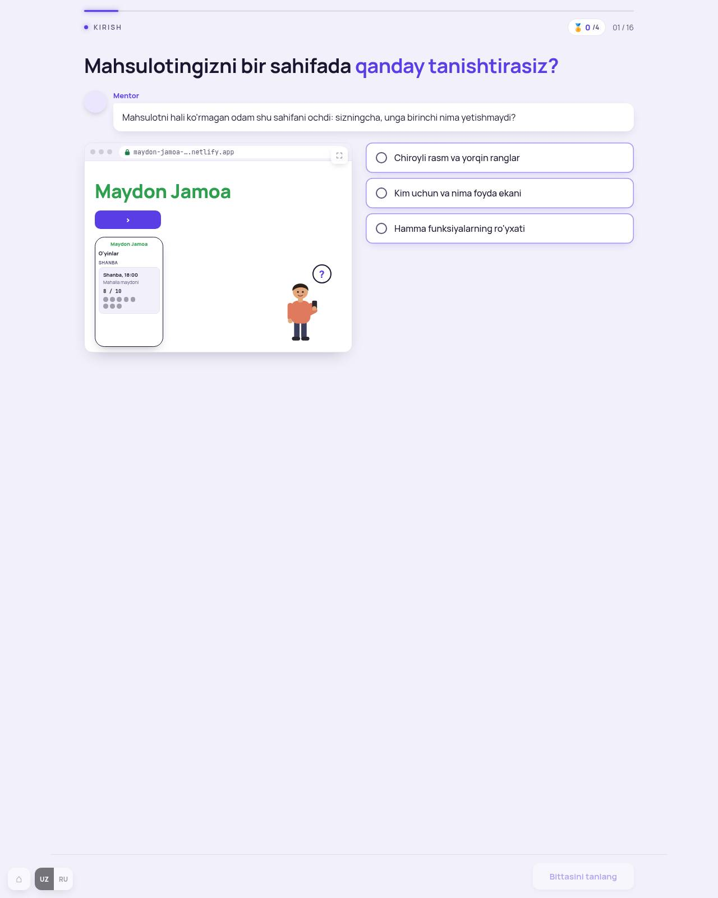
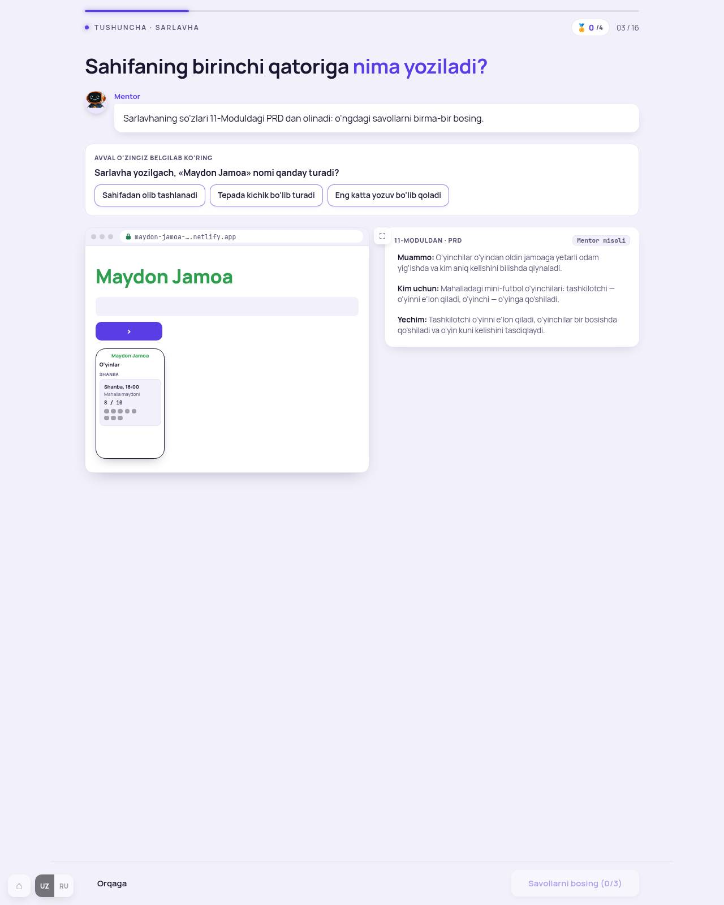
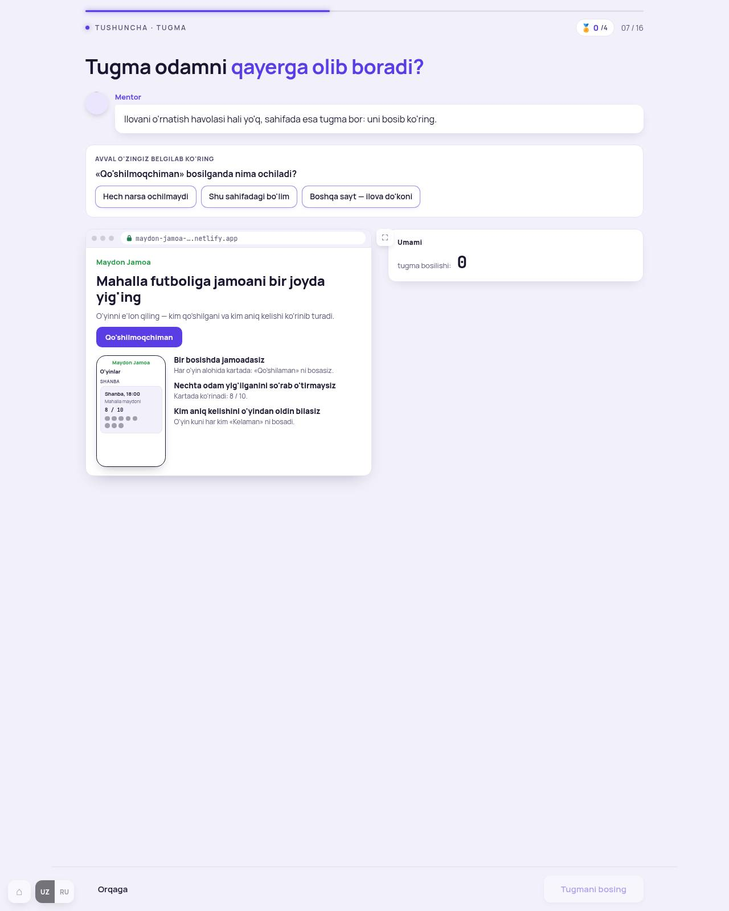
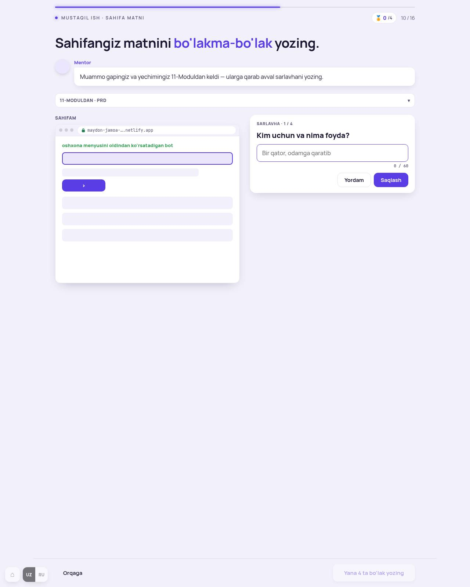
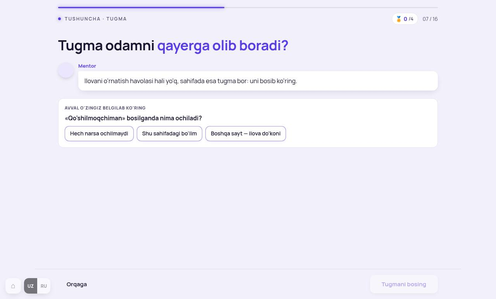
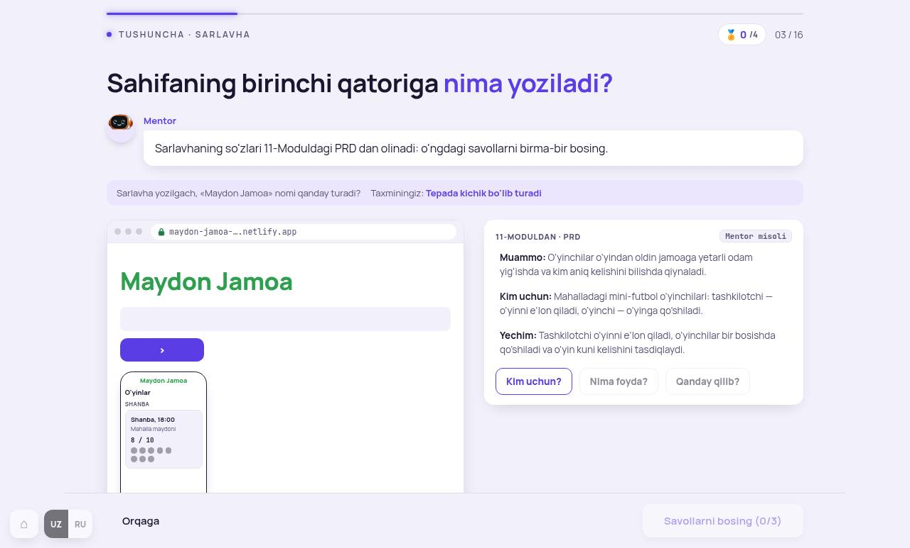
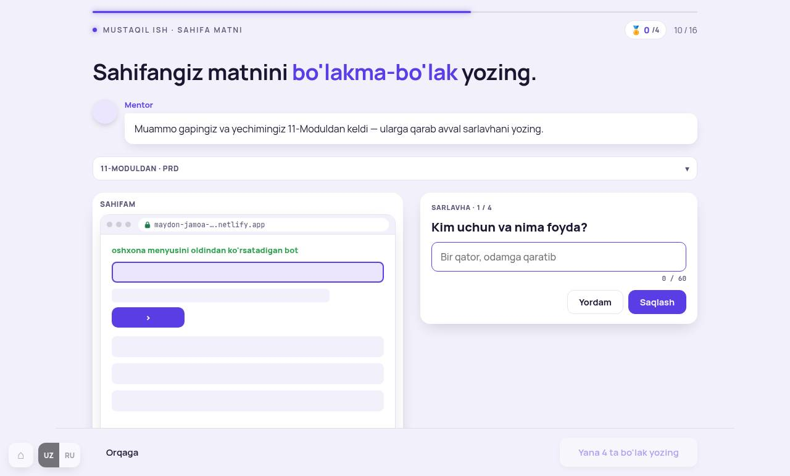

Dars oxirida o'quvchi: o'z mahsuloti uchun lending matnini yozadi (sarlavha, sarlavha osti, uch foyda, asosiy tugma) va sahifani internetga chiqaradi.
O'lchov ro'yxatida 4 ekran. Ko'rib chiqdim: 2 va 6-ekranda bashorat mazmun bilan birga (213.7), 0 va 9-ekran 213 ga mos — faqat 9-ekranda bitta osilgan yorliq. Hech narsa hali o'zgartirilmagan.

Telefon maketi bezak emas: Mentor gapi «sahifada hozir nom va telefon bor» shu maketga ishora qiladi. O'lchov «ls-oyna» guruhini sanagan, lekin bu bitta sahifa-maketi. Hukm: to'g'ri, tegilmaydi.

Tashxis. «Avval o'zingiz belgilab ko'ring» kartasi ostida darrov sahifa maketi va «11-Moduldan · PRD» kartasi. Savol tugmalari taxmindan keyin chiqadi — bu to'g'ri, lekin sahifa va PRD taxmindan oldin ko'rinib turadi (213.7).

Tashxis. Xuddi shu: taxmin savoli («Qo'shilmoqchiman» bosilganda nima ochiladi?») va javob beriladigan sahifa bir vaqtda ekranda.

Tashxis. Bo'laklar navbat bilan (Sarlavha 1 / 4 → …), «Uch foyda» juftma-juft, Saqlash doim — 213.11 ga mos. O'lchov 3 maydonni «Uch foyda» qadamida sanagan (ikki maydon — foyda va funksiya qatori, bu bitta juft). Bitta mayda joy: chapdagi «Sahifam» yozuvi karta tashqarisida osilib turibdi.



Darvozalar 13/13 · MD YAKUNIY/01 yangilandi · suratlar uz 1280 · 390 · ru · QA coddycamp-12modul (deploy jurnalda).